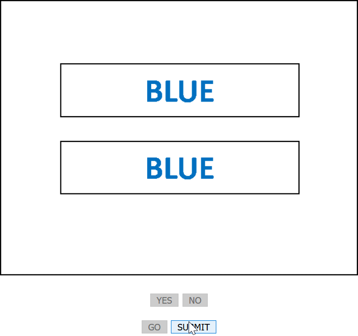

True Color
How to play
There are two written words.
Objective: Read the top word in the top rectangle. Choose "Yes" if the meaning of the
top word matches the colour of the second word in the second rectangle.
Choose "No" if the meaning of the top word does not match the colour of the second word.
Example:

Click "Go" to get the first image. Read the first word in the first rectangle. Read the second word in the second rectangle. The first word reads "Blue", the second word is not written in the colour "Blue". So choose "No".
In the end the buttons will be grayed out except for the "Submit" button. Click "Submit" to save your status.
You can save up to three games in total.
Back